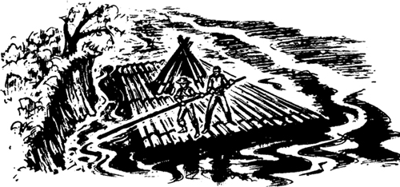
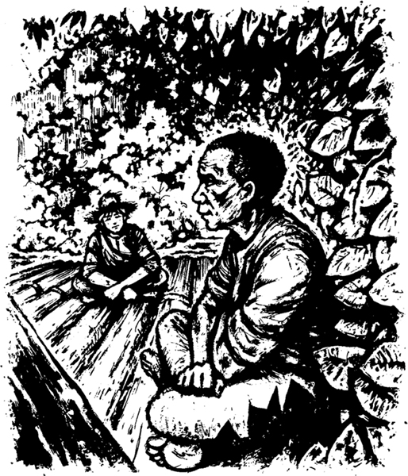

4

Trên bè
Tôi nhanh chóng quay lại hòn đảo và kể cho Jim nghe tin. Tôi nói: "Chúng ta phải khởi hành ngay, Jim. Ngày mai sẽ có nhiều người đến đây. Họ sẽ mang theo chó và những con chó đó sẽ dễ dàng tìm ra chúng ta. Chúng ta phải rời khỏi hòn đảo ngay bây giờ!"
Jim nói: "Chúng ta sẽ tới Cairo trên chiếc bè, Huck. Chúng ta sẽ bán chiếc bè ở đó. Chúng ta sẽ dùng số tiền đó để mua vé tàu hơi nước đi Sông Ohio. Tôi không muốn làm nô lệ nữa!"
Chúng tôi lấy chiếc bè từ nơi ẩn náu. Chúng tôi để quần áo và đồ ăn của mình vào túp lều nhỏ trên bè. Một giờ sau khi tôi quay trở lại hòn đảo, chúng tôi lái bè ra ngoài dòng nước chảy. Không lâu sau, Sông Mississippi hùng vĩ đưa chúng tôi ra khỏi St Petersburg.

Chúng tôi đi vào ban đêm. Không ai có thể nhìn thấy chúng tôi trong bóng tối. Rồi mỗi ngày, chúng tôi lái bè tới bờ và giấu dưới những gốc cây cùng bụi rậm. Jim gặp nguy hiểm lớn vào ban ngày. Missouri là một bang nô lệ, không phải là bang tự do. Và ở Illinois, mọi người sẽ bắt những nô lệ bỏ trốn. Rồi họ đưa những nô lệ đó về cho chủ của nô lệ và họ sẽ được thưởng.
Jim nói: "Tôi sợ lắm, Huck. Những người đàn ông da trắng sẽ bắt tôi ở đây. Họ sẽ bán tôi cho một kẻ buôn nô lệ. Hoặc họ sẽ đưa tôi về cho cô Watson và nhận thưởng. Tôi không được an toàn ở đây!"
Jim nói đúng. Cậu ấy không có bất cứ giấy tờ hợp pháp nào. Cậu ấy không thể nói rằng, "Tôi không còn là nô lệ nữa. Chủ nhân cho tôi tự do." Những người đàn ông da đen tự do sẽ có giấy tờ hợp pháp.
Jim nói: "Cô Watson sẽ đăng tin trên báo. Sẽ có hình của tôi và thông tin về tiền thưởng. Những người đàn ông da trắng từ thị trấn gần sông sẽ tìm kiếm tôi.
Chúng tôi rất cẩn thận vào ban ngày. Nhưng mỗi tối, tôi sẽ đi một mình tới một thị trấn nhỏ hoặc một ngôi làng. Tôi mua một ít đồ ăn. Tôi dùng tiền từ ngôi nhà gỗ nhỏ nổi trên sông. Và mỗi đêm, Jim và tôi lái bè đi xuống sông. Tôi lái trong bốn giờ còn Jim ngủ trong bốn giờ. Sau đó, Jim lái còn tôi ngủ.
Vào đêm thứ năm của chuyến đi, chúng tôi đi qua những ánh đèn sáng rực của một thành phố lớn. Tôi lái bè bằng cây sào dài. Tôi không đánh thức Jim dậy. Nhưng sáng hôm sau, tôi kể cho cậu ấy nghe về thành phố đó.
Tôi nói: "Tối qua chúng ta đi qua St. Louis, Jim."
Jim suy nghĩ một lát. Cậu ấy nhìn dòng nước đục ngầu màu nâu của Sông Mississippi.
Cậu ấy nói: "Chúng ta sẽ đến Cairo vào khoảng bảy ngày nữa. Không lâu nữa, tôi sẽ là người tự do. Cậu là một đứa trẻ tốt, Huck. Cậu đã giúp bạn mình. Tôi sẽ không bao giờ quên điều đó."

Có những giọt nước mắt trong mắt Jim. Cậu ấy vui. Nhưng tôi lại lo lắng. Tôi có đang làm đúng không? Jim là tài sản của cô Watson. Phải chăng tôi đang đánh cắp cậu ấy khỏi tay cô ấy? Tôi nghèo nhưng tôi là người da trắng. Tôi đang giúp một nô lệ da đen. Tôi đang phạm pháp. Tôi nghĩ về điều đó một lúc. Nhưng tôi thích Jim. Cậu ấy luôn tốt với tôi. Tôi thích cậu ấy hơn cả cha mình. Tôi thích cậu ấy hơn cả hầu hết những người da trắng. Tôi đang phạm pháp, nhưng tôi không quan tâm.
Sáng hôm đó, Jim hỏi tôi một câu.
Cậu ấy hỏi: "Tại sao thành phố đó lại có tên là "St. Louis", Huck? St. Louis là ai?"
Tôi đáp: "St. Louis là một vị vua của Pháp từ rất lâu rồi, Jim."
Jim nói: "Chúng ta không có vua ở Mỹ, Huck."
Tôi nói: "Không, Jim. Các quốc gia ở châu Âu có vua, hoàng tử và công tước. Chúng ta không có những người đó ở Mỹ. Đó là những ý tưởng lỗi thời. Bây giờ chúng ta có những ý tưởng khác ở Mỹ. Cô Douglas đã gửi tôi đến trường học ở St. Petersburg. Tôi đã học về vua, hoàng tử và công tước ở đó. Bảy mươi năm trước, Vua Anh cũng là vua của chúng ta. Nhưng bây giờ chúng ta không có vua. Giờ đây, nước Mỹ có tổng thống. Tổng thống tốt hơn nhiều so với vua."
Jim hỏi: "Người dân ở châu Âu có sở hữu nô lệ không, Huck?"
Tôi suy nghĩ một lúc.
Tôi nói: "Không, Jim, bây giờ người dân ở châu Âu không có nô lệ nữa. Người da đen được tự do ở đó."
Jim nói: "Tôi hiểu rồi, Huck. Tự do là một ý tưởng lỗi thời!"
Năm đêm sau, có sương mù dày đặc trên sông. Chúng tôi không thể nhìn thấy bất kỳ ánh đèn nào trên bờ. Chúng tôi phải đi vào ban đêm, nhưng không thể lái bè một cách dễ dàng.
Có sương mù dày đặc trong ba ngày. Jim lo lắng. Vào ngày thứ ba, cậu ấy nói cho tôi biết lý do.
Cậu ấy nói: "Chúng ta không được đi qua Cairo, Huck. Thị trấn này sẽ yên tĩnh vào ban đêm. Chúng ta phải tìm kiếm đèn của thị trấn ở bờ phía đông."
Nhưng sáng hôm sau, sương mù bắt đầu tan biến. Ánh sáng ban ngày ló dạng và chúng tôi lái bè tới bờ phía đông của con sông. Đột nhiên, Jim chỉ tay xuống nước. Nước ở giữa sông vốn đục ngầu màu nâu. Nhưng nước gần bờ không đục ngầu, mà trong và sáng.
Jim nói: "Ôi, Huck. Chúng ta đi quá xa rồi. Chúng ta đã đi qua Cairo vào ban đêm. Dòng nước trong và sáng này chảy từ Sông Ohio!"
Mục lục
- Tiêu đề
- Nội dung
- Ghi chú về tác giả
- Ghi chú về câu chuyện này
- Những người trong câu chuyện này
- 1. Các nhà văn không biết mọi thứ!
- 2. Ngôi nhà nhỏ trong rừng
- 3. Hai đứa trẻ bỏ nhà đi
- 4. Trên chiếc bè
- 5. Quyết định
- 6. Vua và Công tước
- 7. Những kẻ lừa đảo
- 8. Chiếc quan tài
- 9. Thêm nhiều anh em!
- 10. Tom Sawyer
- Bản quyền